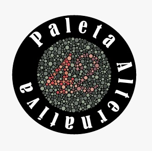

<!DOCTYPE html>
<html lang="es" class="">
<head>
    <meta charset="utf-8"/>
    <meta content="width=device-width, initial-scale=1.0" name="viewport"/>
    <title>Paleta Alternativa | Educación en Salud Visual y Daltonismo</title>
    <script src="https://cdn.tailwindcss.com?plugins=forms,container-queries"></script>
    <link href="https://fonts.googleapis.com/icon?family=Material+Icons" rel="stylesheet"/>
    <link href="https://fonts.googleapis.com/css2?family=Inter:wght@300;400;500;600;700&display=swap" rel="stylesheet"/>
    <link href="https://fonts.googleapis.com/css2?family=Material+Symbols+Outlined:wght,FILL@100..700,0..1&display=swap" rel="stylesheet">
    
    <script id="tailwind-config">
        tailwind.config = {
          darkMode: "class",
          theme: {
            extend: {
              colors: {
                "primary": "#137fec",
                "background-light": "#f6f7f8",
                "background-dark": "#101922",
              },
              fontFamily: {
                "display": ["Inter", "sans-serif"],
                "sans": ["Inter", "sans-serif"]
              },
              borderRadius: {"DEFAULT": "0.375rem", "lg": "0.5rem", "xl": "0.75rem", "full": "9999px"},
            },
          },
        }
    </script>

    <style type="text/tailwindcss">
        @layer base {
            body {
                @apply bg-background-light dark:bg-background-dark text-slate-900 dark:text-slate-100 font-display transition-colors duration-300;
            }
        }
        .material-symbols-outlined {
            font-variation-settings: 'FILL' 0, 'wght' 400, 'GRAD' 0, 'opsz' 24;
        }
        .pattern-dots {
            background-image: radial-gradient(#cbd5e1 1px, transparent 1px);
            background-size: 10px 10px;
        }
        .dark .pattern-dots {
            background-image: radial-gradient(#334155 1px, transparent 1px);
        }
        .filter-protanopia { filter: url('#protanopia-filter'); }
        .filter-deuteranopia { filter: url('#deuteranopia-filter'); }
        .filter-tritanopia { filter: url('#tritanopia-filter'); }
        .rainbow-gradient {
            background: linear-gradient(to right, #ff0000, #ff7f00, #ffff00, #00ff00, #0000ff, #4b0082, #8b00ff);
        }
    </style>

    <!-- React and Dependencies -->
    <script src="https://unpkg.com/react@18/umd/react.production.min.js"></script>
    <script src="https://unpkg.com/react-dom@18/umd/react-dom.production.min.js"></script>
    <script src="https://unpkg.com/history@5/umd/history.development.js"></script>
    <script src="https://unpkg.com/react-router@6.3.0/umd/react-router.development.js"></script>
    <script src="https://unpkg.com/react-router-dom@6.3.0/umd/react-router-dom.development.js"></script>
    <script src="https://unpkg.com/@babel/standalone/babel.min.js"></script>

    <meta name="description" content="www"> 

    <meta property="og:title" content="Paleta Alternativa">
    <meta property="og:description" content="web site">
    <meta property="og:type" content="web site">
    <meta property="og:url" content="url">
</head>
<body>
    <div id="root"></div>

    <script type="text/babel">
        const { useState, useEffect } = React;
        const { createRoot } = ReactDOM;
        const { MemoryRouter, Routes, Route, Link, useNavigate, useLocation } = ReactRouterDOM;

        // SVG Filters for Daltonism Simulation
        const ColorFilters = () => (
            <svg style={{ display: 'none' }}>
                <filter id="protanopia-filter">
                    <feColorMatrix type="matrix" values="0.567, 0.433, 0, 0, 0, 0.558, 0.442, 0, 0, 0, 0, 0.242, 0.758, 0, 0, 0, 0, 0, 1, 0"></feColorMatrix>
                </filter>
                <filter id="deuteranopia-filter">
                    <feColorMatrix type="matrix" values="0.625, 0.375, 0, 0, 0, 0.7, 0.3, 0, 0, 0, 0, 0.3, 0.7, 0, 0, 0, 0, 0, 1, 0"></feColorMatrix>
                </filter>
                <filter id="tritanopia-filter">
                    <feColorMatrix type="matrix" values="0.95, 0.05, 0, 0, 0, 0, 0.433, 0.567, 0, 0, 0, 0.475, 0.525, 0, 0, 0, 0, 0, 1, 0"></feColorMatrix>
                </filter>
            </svg>
        );

        // --- Common Components ---

        const Navbar = () => {
            const location = useLocation();
            const [isDarkMode, setIsDarkMode] = useState(false);

            const toggleDarkMode = () => {
                setIsDarkMode(!isDarkMode);
                document.documentElement.classList.toggle('dark');
            };

            const navLinks = [
                { name: 'Inicio', path: '/' },
                { name: 'Tipos', path: '/tipos' },
                { name: 'Estadísticas', path: '/estadisticas' },
                { name: 'Diseño', path: '/diseno' },
                { name: 'Test', path: '/test' }
            ];

            return (
                <nav className="sticky top-0 z-50 bg-white/80 dark:bg-background-dark/80 backdrop-blur-md border-b border-primary/10">
                    <div className="max-w-7xl mx-auto px-4 sm:px-6 lg:px-8">
                        <div className="flex justify-between h-16 items-center">
                            <Link to="/" className="flex items-center gap-2">
                                <div className="w-8 h-8 bg-primary rounded flex items-center justify-center"> 
                                </div>
                                <span className="font-bold text-xl tracking-tight">Paleta<span className="text-primary">Alternativa</span></span>
                            </Link>
                            <div className="hidden md:flex space-x-8">
                                {navLinks.map((link) => (
                                    <Link 
                                        key={link.path}
                                        to={link.path}
                                        className={`text-sm font-medium transition-colors ${location.pathname === link.path ? 'text-primary' : 'hover:text-primary'}`}
                                    >
                                        {link.name}
                                    </Link>
                                ))}
                            </div>
                            <div className="flex items-center gap-4">
                                <button 
                                    onClick={toggleDarkMode}
                                    className="p-2 rounded-lg bg-slate-100 dark:bg-slate-800 text-slate-600 dark:text-slate-400"
                                    title="Toggle Dark Mode"
                                >
                                    <span className="material-icons text-sm">{isDarkMode ? 'light_mode' : 'dark_mode'}</span>
                                </button>
                                <button className="bg-primary text-white px-4 py-2 rounded-lg text-sm font-semibold hover:bg-primary/90 transition-all shadow-sm">
                                    <a href="https://psicologiaymente.com/clinica/daltonismo"><h6>Aprender más</h6></a>
                                </button>
                            </div>
                        </div>
                    </div>
                </nav>
            );
        };

        const Footer = () => (
            <footer className="bg-slate-900 text-white py-20">
                <div className="max-w-7xl mx-auto px-4 sm:px-6 lg:px-8">
                    <div className="grid grid-cols-1 md:grid-cols-4 gap-12 mb-12">
                        <div className="col-span-1 md:col-span-2">
                            <div className="flex items-center gap-2 mb-6">
                                <div className="w-8 h-8 bg-primary rounded flex items-center justify-center">
                                    <span className="material-icons text-white text-lg">visibility</span>
                                </div>
                                <span className="font-bold text-xl tracking-tight">Paleta<span className="text-primary">Alternativa</span></span>
                            </div>
                            <p className="text-slate-400 max-w-md mb-6 leading-relaxed">
                                Dedicados a cerrar la brecha de comprensión sobre la visión cromática a través de la educación, el diseño accesible y la divulgación científica.
                            </p>
                            <div className="flex gap-4">
                                <a className="w-10 h-10 rounded-full bg-slate-800 flex items-center justify-center hover:bg-primary transition-colors" href="https://www.facebook.com/share/1Hpr6WqMMS/?mibextid=wwXIfr"><span className="material-icons text-lg">facebook</span></a>
                                <a className="w-10 h-10 rounded-full bg-slate-800 flex items-center justify-center hover:bg-primary transition-colors" href="https://www.instagram.com/paletaalternativa?igsh=NHB5MzRiM254bXQz"><span className="material-icons text-lg">instagram</span></a>    
                            </div>
                        </div>
                        <div>
                            <h4 className="font-bold mb-6 text-primary">Aprender</h4>
                            <ul className="space-y-4 text-slate-400">
                               
                                <li><Link className="hover:text-white transition-colors" to="/tipos">Tipos Detallados</Link></li>
                                
                            </ul>
                        </div>
                        <div>
                            <h4 className="font-bold mb-6 text-primary">Navegación</h4>
                            <ul className="space-y-4 text-slate-400">
                                <li><Link className="hover:text-white transition-colors" to="/estadisticas">Estadísticas</Link></li>
                                <li><Link className="hover:text-white transition-colors" to="/diseno">Guía de Diseño</Link></li>
                                <li><Link className="hover:text-white transition-colors" to="/test">Test Online</Link></li>
                            </ul>
                        </div>
                    </div>
                    <div className="pt-8 border-t border-slate-800 text-center text-slate-500 text-sm">
                        <p>© 2026 Paleta Alternativa Education Project. Promoviendo un mundo más accesible para todos.</p>
                    </div>
                </div>
            </footer>
        );

        // --- Screens ---

        const HomePage = () => (
            <>
                <header className="relative py-32 overflow-hidden">
                    <div className="max-w-7xl mx-auto px-4 sm:px-6 lg:px-8 text-center">
                        <div className="inline-flex items-center gap-2 px-3 py-1 rounded-full bg-primary/10 text-primary text-xs font-bold uppercase tracking-wider mb-6">
                            <span className="flex h-2 w-2 rounded-full bg-primary animate-pulse"></span>
                            Entender
                        </div>
                        <h1 className="text-5xl md:text-7xl font-extrabold tracking-tight mb-6">
                            Más allá del <span className="text-primary">Color</span>
                        </h1>
                        <p className="text-xl text-slate-600 dark:text-slate-400 max-w-3xl mx-auto mb-10 leading-relaxed">
                            Una guía profunda sobre la deficiencia de la visión cromática. Entiende la genética, los tipos específicos y el impacto global de vivir en un mundo diseñado para la visión tricromática estándar.
                        </p>
                        <div className="flex flex-col sm:flex-row gap-4 justify-center">
                            <Link to="/tipos" className="bg-primary text-white px-8 py-4 rounded-xl font-bold shadow-lg shadow-primary/25 hover:-translate-y-1 transition-all">Explorar Tipos</Link>
                            <Link to="/estadisticas" className="bg-white dark:bg-slate-800 border border-slate-200 dark:border-slate-700 px-8 py-4 rounded-xl font-bold hover:bg-slate-50 dark:hover:bg-slate-700 transition-all">Ver Datos Globales</Link>
                        </div>
                    </div>
                </header>
                <section className="max-w-7xl mx-auto px-4 sm:px-6 lg:px-8 py-24 border-t border-slate-200 dark:border-slate-800">
                    <div className="flex flex-col md:flex-row md:items-end justify-between mb-12 gap-6 text-center md:text-left">
                        <div className="max-w-2xl mx-auto md:mx-0">
                            <div className="inline-block px-4 py-1 bg-primary/10 text-primary rounded-full font-bold text-xs tracking-widest uppercase mb-4">Recursos y Herramientas</div>
                            <h2 className="text-4xl font-bold mb-4">Herramientas Externas</h2>
                            <p className="text-slate-600 dark:text-slate-400">
                                Una selección curada de aplicaciones, extensiones y guías para mejorar la experiencia digital y profesional de personas con daltonismo.
                            </p>
                        </div>
                    </div>
                    <div className="grid grid-cols-1 md:grid-cols-3 gap-8">
                        <div className="space-y-6">
                            <div className="flex items-center gap-3 pb-4 border-b border-slate-200 dark:border-slate-800">
                                <span className="material-symbols-outlined text-primary text-2xl">extension</span>
                                <h3 className="text-xl font-bold">Extensiones</h3>
                            </div>
                            <div className="group p-6 bg-white dark:bg-slate-800/50 rounded-2xl border border-slate-200 dark:border-slate-700 hover:border-primary/30 transition-all shadow-sm">
                                <h4 className="font-bold text-lg mb-2">Colorblindly</h4>
                                <p className="text-sm text-slate-500 dark:text-slate-400 mb-6 leading-relaxed">Simula los 8 tipos de daltonismo en cualquier sitio web.</p>
                                <a className="inline-flex items-center gap-2 text-sm font-bold text-primary" href="https://chromewebstore.google.com/detail/colorblindly/floniaahmccleoclneebhhmnjgdfijgg">Visitar <span className="material-icons text-xs">arrow_forward</span></a>
                            </div>
                        </div>
                        <div className="space-y-6">
                            <div className="flex items-center gap-3 pb-4 border-b border-slate-200 dark:border-slate-800">
                                <span className="material-symbols-outlined text-primary text-2xl">laptop_mac</span>
                                <h3 className="text-xl font-bold">Software</h3>
                            </div>
                            <div className="group p-6 bg-white dark:bg-slate-800/50 rounded-2xl border border-slate-200 dark:border-slate-700 hover:border-primary/30 transition-all shadow-sm">
                                <h4 className="font-bold text-lg mb-2">Sim Daltonism</h4>
                                <p className="text-sm text-slate-500 dark:text-slate-400 mb-6 leading-relaxed">Visualiza en tiempo real lo que ve una persona daltónica.</p>
                                <a className="inline-flex items-center gap-2 text-sm font-bold text-primary" href="https://michelf.ca/projects/sim-daltonism/">Descargar <span className="material-icons text-xs">arrow_forward</span></a>
                            </div>
                        </div>
                        <div className="space-y-6">
                            <div className="flex items-center gap-3 pb-4 border-b border-slate-200 dark:border-slate-800">
                                <span className="material-symbols-outlined text-primary text-2xl">menu_book</span>
                                <h3 className="text-xl font-bold">Guías</h3>
                            </div>
                            <div className="group p-6 bg-white dark:bg-slate-800/50 rounded-2xl border border-slate-200 dark:border-slate-700 hover:border-primary/30 transition-all shadow-sm">
                                <h4 className="font-bold text-lg mb-2">WCAG Guidelines</h4>
                                <p className="text-sm text-slate-500 dark:text-slate-400 mb-6 leading-relaxed">El estándar internacional para la accesibilidad web.</p>
                                <a className="inline-flex items-center gap-2 text-sm font-bold text-primary" href="https://www.wcag.com/resource/what-is-wcag/">Leer <span className="material-icons text-xs">arrow_forward</span></a>
                            </div>
                        </div>
                    </div>
                </section>
            </>
        );

        const TypesPage = () => (
            <>
                <header className="relative py-16 bg-white dark:bg-slate-900 border-b border-slate-200 dark:border-slate-800">
                    <div className="max-w-7xl mx-auto px-4 sm:px-6 lg:px-8">
                        <h1 className="text-4xl md:text-5xl font-extrabold tracking-tight mb-4">
                            Daltonismo: <span className="text-primary">Tipos y Espectro</span>
                        </h1>
                        <p className="text-lg text-slate-600 dark:text-slate-400 max-w-3xl leading-relaxed">
                            Explora las variantes de la deficiencia visual cromática y cómo estas afectan la percepción del arcoíris visible.
                        </p>
                    </div>
                </header>
                <section className="max-w-7xl mx-auto px-4 sm:px-6 lg:px-8 py-20">
                    <div class="grid grid-cols-1 gap-12">
<div class="grid md:grid-cols-2 gap-10 items-center bg-white dark:bg-slate-800/50 p-8 rounded-3xl border border-slate-200 dark:border-slate-700 shadow-sm">
<div class="space-y-6">
<div class="inline-block px-4 py-1 bg-red-100 dark:bg-red-900/30 text-red-600 dark:text-red-400 rounded-full font-bold text-sm tracking-wide">PROTANOPIA (CEGUERA AL ROJO)</div>
<h3 class="text-3xl font-bold">Ausencia de Conos L</h3>
<p class="text-slate-600 dark:text-slate-400 leading-relaxed text-lg">
                    La protanopia ocurre cuando los fotorreceptores de longitud de onda larga (rojos) están completamente ausentes. Para estas personas, el espectro de color se reduce significativamente. Los rojos se perciben como tonos negros o grises muy oscuros, mientras que las naranjas, amarillos y verdes se fusionan en tonos amarillentos similares.
                </p>
<div class="bg-slate-50 dark:bg-slate-800 p-6 rounded-2xl border-l-4 border-red-500">
<h4 class="font-bold mb-2">Impacto Visual:</h4>
<ul class="text-sm space-y-2 text-slate-500 dark:text-slate-400">
<li class="flex items-start gap-2"><span class="material-icons text-red-500 text-xs mt-1">lens</span> Los semáforos rojos pueden parecer luces apagadas o grises.</li>
<li class="flex items-start gap-2"><span class="material-icons text-red-500 text-xs mt-1">lens</span> Flores púrpuras se confunden con azules.</li>
<li class="flex items-start gap-2"><span class="material-icons text-red-500 text-xs mt-1">lens</span> Dificultad extrema para distinguir madurez en frutas rojas.</li>
</ul>
</div>
</div>
<div class="relative group">
<div class="aspect-video rounded-2xl overflow-hidden shadow-2xl">

</div>
<div class="absolute -bottom-4 -right-4 bg-white dark:bg-slate-900 px-6 py-4 rounded-2xl shadow-xl border border-slate-200 dark:border-slate-700">
<p class="text-xs font-bold text-slate-400 uppercase tracking-widest mb-1">Simulación</p>
<p class="font-bold text-red-500">Vista Protanope</p>
</div>
</div>
</div>
<div class="grid md:grid-cols-2 gap-10 items-center bg-white dark:bg-slate-800/50 p-8 rounded-3xl border border-slate-200 dark:border-slate-700 shadow-sm">
<div class="order-2 md:order-1 relative group">
<div class="aspect-video rounded-2xl overflow-hidden shadow-2xl">

</div>
<div class="absolute -bottom-4 -left-4 bg-white dark:bg-slate-900 px-6 py-4 rounded-2xl shadow-xl border border-slate-200 dark:border-slate-700">
<p class="text-xs font-bold text-slate-400 uppercase tracking-widest mb-1">Simulación</p>
<p class="font-bold text-green-500">Vista Deuteranope</p>
</div>
</div>
<div class="order-1 md:order-2 space-y-6">
<div class="inline-block px-4 py-1 bg-green-100 dark:bg-green-900/30 text-green-600 dark:text-green-400 rounded-full font-bold text-sm tracking-wide">DEUTERANOPIA (CEGUERA AL VERDE)</div>
<h3 class="text-3xl font-bold">Ausencia de Conos M</h3>
<p class="text-slate-600 dark:text-slate-400 leading-relaxed text-lg">
                    Es la forma más común de daltonismo. Quienes la padecen no tienen fotorreceptores de longitud de onda media (verdes). La confusión entre el verde y el rojo es la característica principal, pero a diferencia de la protanopia, el brillo de los colores no se pierde tanto; simplemente los matices se vuelven indistinguibles.
                </p>
<div class="bg-slate-50 dark:bg-slate-800 p-6 rounded-2xl border-l-4 border-green-500">
<h4 class="font-bold mb-2">Impacto Visual:</h4>
<ul class="text-sm space-y-2 text-slate-500 dark:text-slate-400">
<li class="flex items-start gap-2"><span class="material-icons text-green-500 text-xs mt-1">lens</span> Confusión clásica entre rojo y verde en mapas y gráficos.</li>
<li class="flex items-start gap-2"><span class="material-icons text-green-500 text-xs mt-1">lens</span> El rosa puede parecer gris o blanco sucio.</li>
<li class="flex items-start gap-2"><span class="material-icons text-green-500 text-xs mt-1">lens</span> Gran dificultad en entornos naturales boscosos.</li>
</ul>
</div>
</div>
</div>
<div class="grid md:grid-cols-2 gap-10 items-center bg-white dark:bg-slate-800/50 p-8 rounded-3xl border border-slate-200 dark:border-slate-700 shadow-sm">
<div class="space-y-6">
<div class="inline-block px-4 py-1 bg-blue-100 dark:bg-blue-900/30 text-blue-600 dark:text-blue-400 rounded-full font-bold text-sm tracking-wide">TRITANOPIA (CEGUERA AL AZUL)</div>
<h3 class="text-3xl font-bold">Ausencia de Conos S</h3>
<p class="text-slate-600 dark:text-slate-400 leading-relaxed text-lg">
                    Una condición extremadamente rara que afecta a menos del 1% de la población. Se debe a la falta de conos sensibles a las longitudes de onda cortas (azul). Las personas con tritanopia ven el mundo en tonos de rosa, rojo y turquesa. El amarillo se percibe como violeta o gris claro.
                </p>
<div class="bg-slate-50 dark:bg-slate-800 p-6 rounded-2xl border-l-4 border-blue-500">
<h4 class="font-bold mb-2">Impacto Visual:</h4>
<ul class="text-sm space-y-2 text-slate-500 dark:text-slate-400">
<li class="flex items-start gap-2"><span class="material-icons text-blue-500 text-xs mt-1">lens</span> Los azules parecen verdes azulados.</li>
<li class="flex items-start gap-2"><span class="material-icons text-blue-500 text-xs mt-1">lens</span> Los amarillos parecen rosados o violetas.</li>
<li class="flex items-start gap-2"><span class="material-icons text-blue-500 text-xs mt-1">lens</span> Los morados se perciben como negros o rojos oscuros.</li>
</ul>
</div>
</div>
<div class="relative group">
<div class="aspect-video rounded-2xl overflow-hidden shadow-2xl">

</div>
<div class="absolute -bottom-4 -right-4 bg-white dark:bg-slate-900 px-6 py-4 rounded-2xl shadow-xl border border-slate-200 dark:border-slate-700">
<p class="text-xs font-bold text-slate-400 uppercase tracking-widest mb-1">Simulación</p>
<p class="font-bold text-blue-500">Vista Tritanope</p>
</div>
</div>
</div>
</div>
                </section>
                <section className="bg-slate-900 text-white py-24">
                    <div className="max-w-7xl mx-auto px-4 sm:px-6 lg:px-8">
                        <div className="text-center mb-16">
                            <h2 className="text-4xl font-bold mb-4">Comparación del Espectro</h2>
                            <p className="text-slate-400 max-w-2xl mx-auto">Observa cómo cambia el arcoíris bajo diferentes condiciones visuales.</p>
                        </div>
                        <div className="space-y-12">
                            <div><div className="mb-2 font-bold uppercase">Estándar</div><div className="h-12 w-full rounded-xl rainbow-gradient"></div></div>
                            <div><div className="mb-2 font-bold uppercase text-red-400">Protanopia</div><div className="h-12 w-full rounded-xl rainbow-gradient filter-protanopia"></div></div>
                            <div><div className="mb-2 font-bold uppercase text-green-400">Deuteranopia</div><div className="h-12 w-full rounded-xl rainbow-gradient filter-deuteranopia"></div></div>
                             <div><div className="mb-2 font-bold uppercase text-white-400">Tritanopia</div><div className="h-12 w-full rounded-xl rainbow-gradient filter-tritanopia"></div></div>
                        </div>
                    </div>
                </section>
            </>
        );

        const StatsPage = () => (
            <>
                <header className="relative pt-20 pb-12 border-b border-slate-200 dark:border-slate-800">
                    <div className="max-w-7xl mx-auto px-4 sm:px-6 lg:px-8">
                        <div className="inline-flex items-center gap-2 px-3 py-1 rounded-full bg-primary/10 text-primary text-xs font-bold uppercase tracking-wider mb-6">Datos y Evidencia</div>
                        <h1 className="text-4xl md:text-6xl font-extrabold tracking-tight mb-6">Estadísticas y <span className="text-primary">Mitos</span></h1>
                        <p className="text-lg text-slate-600 dark:text-slate-400 max-w-3xl leading-relaxed">Desmitificamos las creencias populares para fomentar una sociedad más informada.</p>
                    </div>
                </header>
                <section className="max-w-7xl mx-auto px-4 sm:px-6 lg:px-8 py-24">
                    <div className="grid lg:grid-cols-2 gap-20 items-center">
                        <div>
                            <h2 className="text-4xl font-bold mb-8">Impacto Global</h2>
                            <p className="text-slate-600 dark:text-slate-400 text-lg mb-8 leading-relaxed">Más de <span className="text-primary font-bold">300 millones de personas</span> viven con alguna forma de deficiencia de color.</p>
                            <div className="space-y-8">
                                <div><div className="flex justify-between mb-2"><span className="font-bold">Hombres (8%)</span><span>1 de cada 12</span></div><div className="w-full bg-slate-200 dark:bg-slate-700 h-4 rounded-full"><div className="bg-primary h-full rounded-full" style={{width: '80%'}}></div></div></div>
                                <div><div className="flex justify-between mb-2"><span className="font-bold">Mujeres (0.5%)</span><span>1 de cada 200</span></div><div className="w-full bg-slate-200 dark:bg-slate-700 h-4 rounded-full"><div className="bg-primary h-full rounded-full" style={{width: '5%'}}></div></div></div>
                            </div>
                        </div>
                        <div className="grid grid-cols-2 gap-6">
                            {[ {val: '99%', label: 'Genético'}, {val: '4.5%', label: 'Pob. Mundial'}, {val: '0.001%', label: 'Acromatopsia'}, {val: '10-15', label: 'Años Retraso'} ].map((item, i) => (
                                <div key={i} className="bg-white dark:bg-slate-800 p-8 rounded-3xl border border-slate-200 dark:border-slate-700 text-center shadow-sm">
                                    <div className="text-4xl font-extrabold text-primary mb-2">{item.val}</div>
                                    <p className="text-sm font-bold text-slate-500 uppercase">{item.label}</p>
                                </div>
                            ))}
                        </div>
                    </div>
                </section>
                <section className="bg-slate-50 dark:bg-slate-800/30 py-24 border-y border-slate-200 dark:border-slate-800">
                    <div class="max-w-7xl mx-auto px-4 sm:px-6 lg:px-8">
<div class="text-center mb-16">
<div class="inline-block px-4 py-1 bg-primary/10 text-primary rounded-full font-bold text-xs tracking-widest uppercase mb-4">Educación &amp; Verdad</div>
<h2 class="text-4xl font-bold mb-4">Mitos vs. Realidades</h2>
<p class="text-slate-600 dark:text-slate-400 max-w-2xl mx-auto">
                Desmontando conceptos erróneos comunes sobre el daltonismo con evidencia científica.
            </p>
</div>
<div class="grid gap-6">
<div class="grid md:grid-cols-2 gap-4 lg:gap-8">
<div class="bg-white dark:bg-slate-800 p-8 rounded-2xl border border-slate-200 dark:border-slate-700 shadow-sm relative overflow-hidden group">
<div class="absolute top-0 right-0 p-4 opacity-10 group-hover:opacity-20 transition-opacity">
<span class="material-icons text-red-600 text-6xl">close</span>
</div>
<div class="flex items-center gap-3 mb-4">
<span class="material-icons text-red-500">cancel</span>
<span class="text-sm font-bold text-red-500 uppercase tracking-widest">Mito</span>
</div>
<p class="text-xl font-bold leading-tight">"Los daltónicos ven el mundo exclusivamente en blanco y negro."</p>
</div>
<div class="bg-white dark:bg-slate-800 p-8 rounded-2xl border border-slate-200 dark:border-slate-700 shadow-sm relative overflow-hidden group">
<div class="absolute top-0 right-0 p-4 opacity-10 group-hover:opacity-20 transition-opacity">
<span class="material-icons text-green-600 text-6xl">check_circle</span>
</div>
<div class="flex items-center gap-3 mb-4">
<span class="material-icons text-green-500">check_circle</span>
<span class="text-sm font-bold text-green-500 uppercase tracking-widest">Realidad</span>
</div>
<p class="text-lg text-slate-600 dark:text-slate-300">Solo una minoría padece <strong>acromatopsia</strong>; la mayoría tiene dificultad para distinguir ciertos matices o intensidades de colores específicos.</p>
</div>
</div>
<div class="grid md:grid-cols-2 gap-4 lg:gap-8">
<div class="bg-white dark:bg-slate-800 p-8 rounded-2xl border border-slate-200 dark:border-slate-700 shadow-sm relative overflow-hidden group">
<div class="absolute top-0 right-0 p-4 opacity-10 group-hover:opacity-20 transition-opacity">
<span class="material-icons text-red-600 text-6xl">close</span>
</div>
<div class="flex items-center gap-3 mb-4">
<span class="material-icons text-red-500">cancel</span>
<span class="text-sm font-bold text-red-500 uppercase tracking-widest">Mito</span>
</div>
<p class="text-xl font-bold leading-tight">"Solo los hombres pueden ser daltónicos."</p>
</div>
<div class="bg-white dark:bg-slate-800 p-8 rounded-2xl border border-slate-200 dark:border-slate-700 shadow-sm relative overflow-hidden group">
<div class="absolute top-0 right-0 p-4 opacity-10 group-hover:opacity-20 transition-opacity">
<span class="material-icons text-green-600 text-6xl">check_circle</span>
</div>
<div class="flex items-center gap-3 mb-4">
<span class="material-icons text-green-500">check_circle</span>
<span class="text-sm font-bold text-green-500 uppercase tracking-widest">Realidad</span>
</div>
<p class="text-lg text-slate-600 dark:text-slate-300">Aunque es mucho más común en hombres (8%) debido a la genética del cromosoma X, aproximadamente el <strong>0.5% de las mujeres</strong> también lo padecen.</p>
</div>
</div>
<div class="grid md:grid-cols-2 gap-4 lg:gap-8">
<div class="bg-white dark:bg-slate-800 p-8 rounded-2xl border border-slate-200 dark:border-slate-700 shadow-sm relative overflow-hidden group">
<div class="absolute top-0 right-0 p-4 opacity-10 group-hover:opacity-20 transition-opacity">
<span class="material-icons text-red-600 text-6xl">close</span>
</div>
<div class="flex items-center gap-3 mb-4">
<span class="material-icons text-red-500">cancel</span>
<span class="text-sm font-bold text-red-500 uppercase tracking-widest">Mito</span>
</div>
<p class="text-xl font-bold leading-tight">"El daltonismo se puede curar con gafas especiales."</p>
</div>
<div class="bg-white dark:bg-slate-800 p-8 rounded-2xl border border-slate-200 dark:border-slate-700 shadow-sm relative overflow-hidden group">
<div class="absolute top-0 right-0 p-4 opacity-10 group-hover:opacity-20 transition-opacity">
<span class="material-icons text-green-600 text-6xl">check_circle</span>
</div>
<div class="flex items-center gap-3 mb-4">
<span class="material-icons text-green-500">check_circle</span>
<span class="text-sm font-bold text-green-500 uppercase tracking-widest">Realidad</span>
</div>
<p class="text-lg text-slate-600 dark:text-slate-300">No hay cura. Las gafas filtran frecuencias de luz para <strong>aumentar el contraste</strong> entre colores confusos, pero no permiten ver colores que el ojo no puede detectar biológicamente.</p>
</div>
</div>
</div>
</div>
                </section>
            </>
        );

        const DesignPage = () => {
            const [textColor, setTextColor] = useState('#137fec');
            const [bgColor, setBgColor] = useState('#ffffff');

            return (
                <>
                    <header className="relative py-20 bg-white dark:bg-slate-900/40">
                        <div className="max-w-7xl mx-auto px-4 sm:px-6 lg:px-8 text-center">
                            <div className="inline-flex items-center gap-2 px-3 py-1 rounded-full bg-primary/10 text-primary text-xs font-bold uppercase tracking-wider mb-6">Diseño Universal</div>
                            <h1 className="text-4xl md:text-6xl font-extrabold tracking-tight mb-6">Diseñando para la <span className="text-primary">Inclusión</span></h1>
                            <p className="text-xl text-slate-600 dark:text-slate-400 max-w-3xl mx-auto">Herramientas profesionales para asegurar que tus creaciones sean accesibles.</p>
                        </div>
                    </header>
                    <section className="max-w-7xl mx-auto px-4 sm:px-6 lg:px-8 py-24">
                        <div className="grid lg:grid-cols-2 gap-16 items-center">
                            <div>
                                <h2 className="text-4xl font-bold mb-6">Comprobador de Contraste</h2>
                                <p className="text-slate-600 dark:text-slate-400 text-lg mb-8 leading-relaxed">El contraste es fundamental. Una relación adecuada permite leer sin fatiga visual.</p>
                                <div className="grid grid-cols-2 gap-6 mb-8">
                                    <div>
                                        <label className="block text-sm font-bold mb-2">Texto</label>
                                        <div className="flex items-center gap-3 p-3 bg-white dark:bg-slate-800 rounded-xl border border-slate-200 dark:border-slate-700">
                                            <input type="color" value={textColor} onChange={(e) => setTextColor(e.target.value)} className="w-8 h-8 rounded border-none"/>
                                            <span className="font-mono text-xs">{textColor.toUpperCase()}</span>
                                        </div>
                                    </div>
                                    <div>
                                        <label className="block text-sm font-bold mb-2">Fondo</label>
                                        <div className="flex items-center gap-3 p-3 bg-white dark:bg-slate-800 rounded-xl border border-slate-200 dark:border-slate-700">
                                            <input type="color" value={bgColor} onChange={(e) => setBgColor(e.target.value)} className="w-8 h-8 rounded border-none"/>
                                            <span className="font-mono text-xs">{bgColor.toUpperCase()}</span>
                                        </div>
                                    </div>
                                </div>
                            </div>
                            <div className="p-8 rounded-3xl border border-slate-200 dark:border-slate-700 shadow-xl pattern-dots">
                                <div className="rounded-2xl p-10 min-h-[300px] flex flex-col justify-center shadow-inner" style={{backgroundColor: bgColor, color: textColor}}>
                                    <h4 className="text-3xl font-bold mb-4">Título de Ejemplo</h4>
                                    <p className="text-lg leading-relaxed">Ejemplo de legibilidad con la combinación seleccionada. El diseño accesible es buen diseño para todos.</p>
                                </div>
                            </div>
                        </div>
                    </section>
                </>
            );
        };

        const TestPage = () => {
            const plates = [
                { img: "https://escolasalut.sjdhospitalbarcelona.org/sites/default/files/ishihara_74.png", res: "74" },
                { img: "https://www.zeiss.ch/content/dam/vis-b2c/reference-master/images/better-vision/understanding-vision/red-green-colour-deficiency/zeiss-colour-blindness-test-6.png/_jcr_content/renditions/original.image_file.629.629.5,0,634,629.file/zeiss-colour-blindness-test-6.png", res: "6" },
                { img: "https://www.zeiss.com.mx/content/dam/vis-b2c/reference-master/images/better-vision/understanding-vision/red-green-colour-deficiency/zeiss-colour-blindness-test-12.png/_jcr_content/renditions/original.image_file.605.605.6,0,611,605.file/zeiss-colour-blindness-test-12.png", res: "12" },
                { img: "https://media.allaboutvision.com/cms/caas/v1/media/574422/data/262fe4d41e47e3019003e04415a64a52/color-blind-normal-330x330.jpg", res: "8" }
            ];

            return (
                <>
                    <header className="relative py-16 text-center border-b border-slate-200 dark:border-slate-800">
                        <div className="max-w-7xl mx-auto px-4">
                            <h1 className="text-4xl font-extrabold mb-4">Test de <span className="text-primary">Ishihara</span></h1>
                            <p className="text-slate-600 dark:text-slate-400">Identifica los números en cada placa. Test informativo, no clínico.</p>
                        </div>
                    </header>
                    <section className="max-w-7xl mx-auto px-4 py-20">
                        <div className="grid grid-cols-1 sm:grid-cols-2 lg:grid-cols-4 gap-8">
                            {plates.map((plate, idx) => (
                                <div key={idx} className="flex flex-col items-center">
                                    <div className="w-full aspect-square bg-white dark:bg-slate-800 rounded-full border-4 border-slate-100 dark:border-slate-700 p-4 mb-4 overflow-hidden shadow-sm flex items-center justify-center">
                                        
                                    </div>
                                    <div className="group relative w-full">
                                        <button className="w-full py-3 bg-white dark:bg-slate-800 hover:bg-primary hover:text-white border border-slate-200 dark:border-slate-700 rounded-xl font-bold transition-all">
                                            Revelar Respuesta
                                        </button>
                                        <div className="absolute bottom-full left-1/2 -translate-x-1/2 mb-4 hidden group-hover:block z-10">
                                            <div className="bg-primary text-white font-bold px-6 py-2 rounded-xl shadow-xl">Número {plate.res}</div>
                                        </div>
                                    </div>
                                </div>
                            ))}
                        </div>
                        <div className="mt-16 p-8 bg-slate-100 dark:bg-slate-800 rounded-3xl text-center max-w-2xl mx-auto">
                            <span className="material-icons text-primary text-4xl mb-4">medical_services</span>
                            <h4 className="font-bold mb-2">Aviso Médico</h4>
                            <p className="text-xs text-slate-500">Este test no constituye un diagnóstico clínico. Consulta a un profesional si tienes dudas.</p>
                        </div>
                    </section>
                </>
            );
        };

        const ScrollToTop = () => {
            const { pathname } = useLocation();
            useEffect(() => {
                window.scrollTo(0, 0);
            }, [pathname]);
            return null;
        };

        const App = () => {
            return (
                <MemoryRouter>
                    <ScrollToTop />
                    <ColorFilters />
                    <div className="flex flex-col min-h-screen">
                        <Navbar />
                        <main className="flex-grow">
                            <Routes>
                                <Route path="/" element={<HomePage />} />
                                <Route path="/tipos" element={<TypesPage />} />
                                <Route path="/estadisticas" element={<StatsPage />} />
                                <Route path="/diseno" element={<DesignPage />} />
                                <Route path="/test" element={<TestPage />} />
                            </Routes>
                        </main>
                        <Footer />
                    </div>
                </MemoryRouter>
            );
        };

        const container = document.getElementById('root');
        const root = createRoot(container);
        root.render(<App />);
    </script>
</body>
</html>


